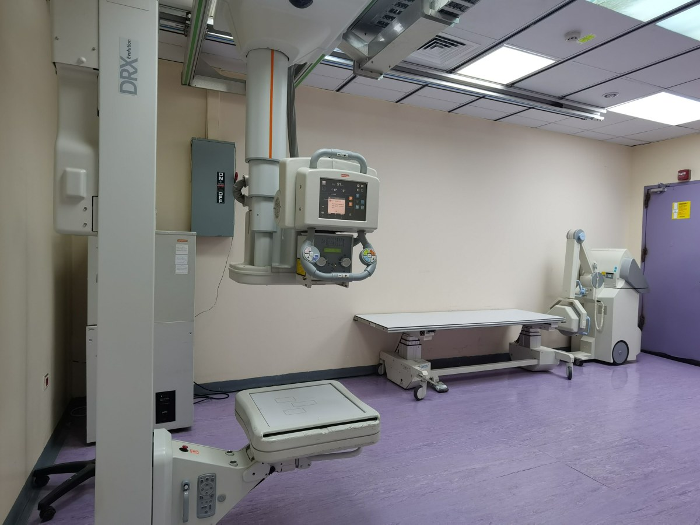
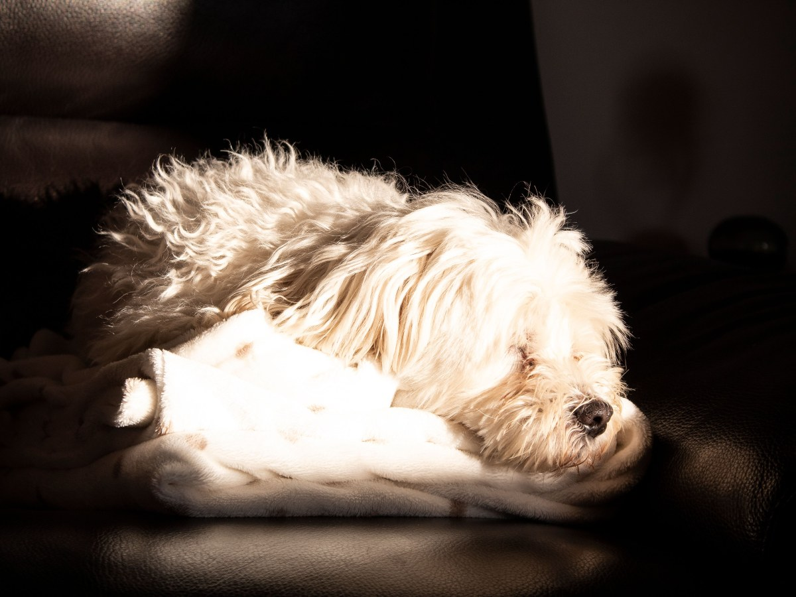
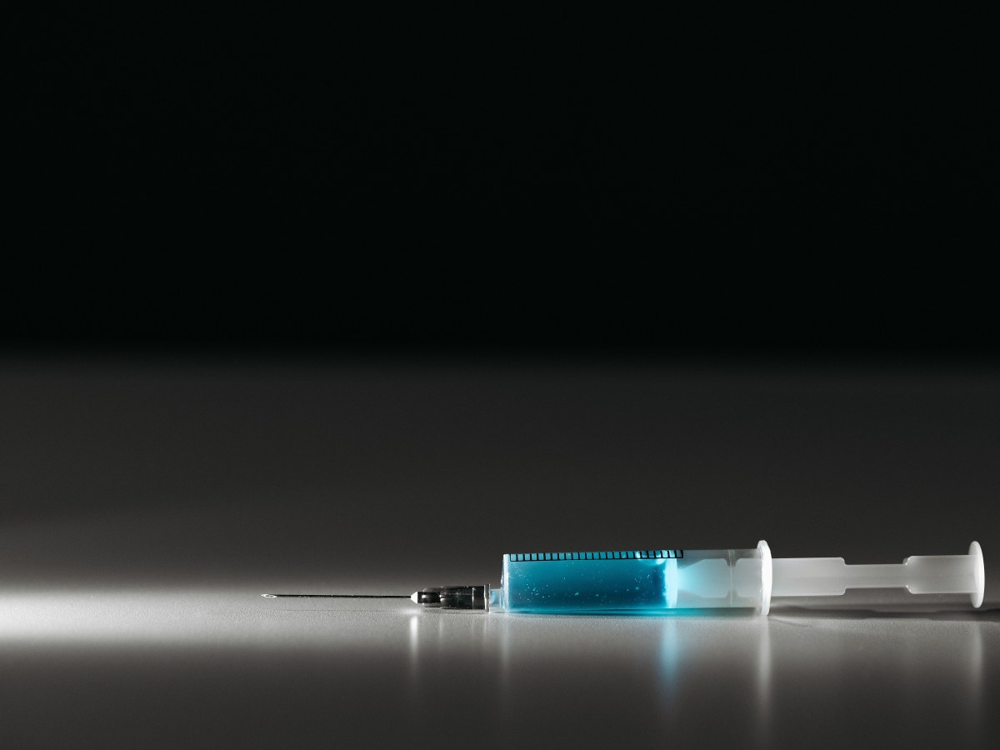
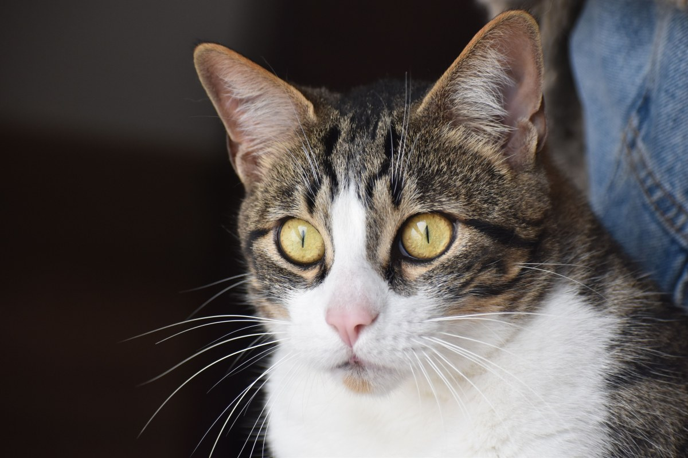
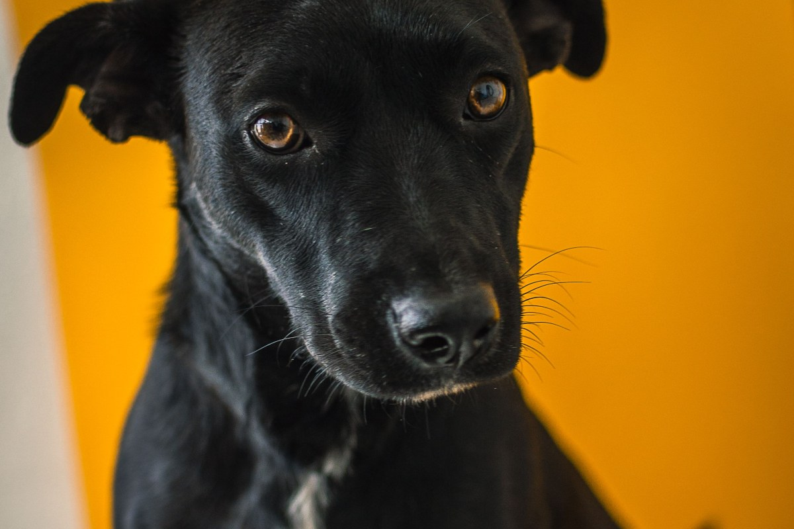
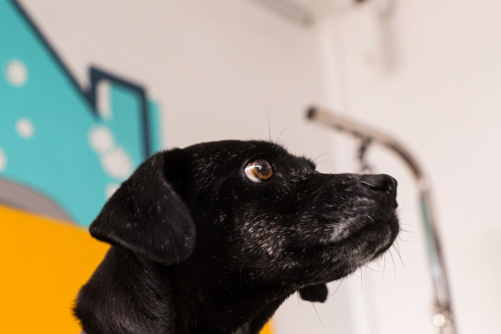

Centro médico veterinario · Osorno
También abre el domingo.
Consulta, urgencias y hospitalización en Zenteno 1615.
- 317reseñas en Google
- 7días a la semana
- 15servicios en el mismo lugar
- 0páginas vivas: su dominio ya no existe
Lo que hay que decidir a las once de la noche
¿Es urgencia o puede esperar?
Si duda, llame antes de salir.
- Ahora mismo
Venga ya
Le cuesta respirar, sangra, lo atropellaron o comió veneno.
- Hoy
No espere a mañana
Vomita seguido, no come o le duele al tocarlo.
- Esta semana
Pida hora
Se rasca, cojea un poco o está más decaído.
- En el control
Anótelo
Vacunas, desparasitación y dudas de todos los días.
Cada caso lo evalúa el veterinario al teléfono.
Los perros no se enferman en horario de oficina.
En Zenteno 1615
Lo que se hace aquí
-

Por dentro
Radiografías y ecografías
Sin derivar a otro lado.
-
Resultados
Laboratorio
Análisis clínicos propios.
-

Los que se quedan
Hospitalización
Y cirugía.
-

Al día
Vacunas y microchip
Con desparasitación.
-
Perros y gatos
Estética
Baño y corte.
-
Boca y dientes
Odontología
Y nutrición.
La lista sale de su ficha de reservas; el detalle lo confirma el centro.
317 reseñas en Osorno, con un 4,0.
Un centro que atiende todos los días recibe de todo
Los pacientes
De guardia, también los domingos




Fotos de referencia: los pacientes de verdad los muestra el centro.
Dónde estamos
Zenteno 1615, Osorno
- Dirección
- Av. Ignacio Zenteno 1615
- Teléfono
- 64 226 2222
- Reseñas
- 317 en Google, nota 4,0
- Atiende
- Todos los días, también domingo
Se atiende por orden de llegada; si es urgencia, llame en el camino.
Zenteno 1615, Osorno Abrir en Google Maps
Para el centro
Qué es real y qué falta
Lo verificado
El nombre, la dirección, el teléfono, las 317 reseñas con 4,0, que abre los domingos y los servicios de su ficha de reservas.
Lo de ejemplo
Los ejemplos de «¿es urgencia o puede esperar?».
Lo que falta
El horario exacto, los valores y fotos del centro y del equipo.